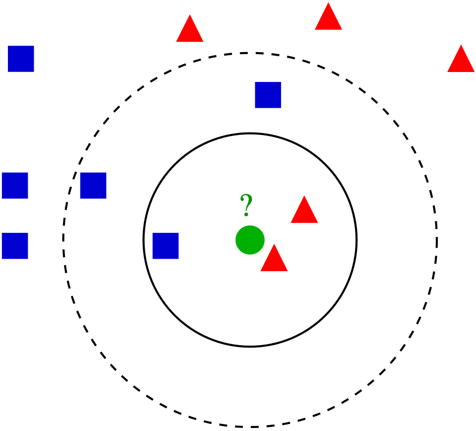
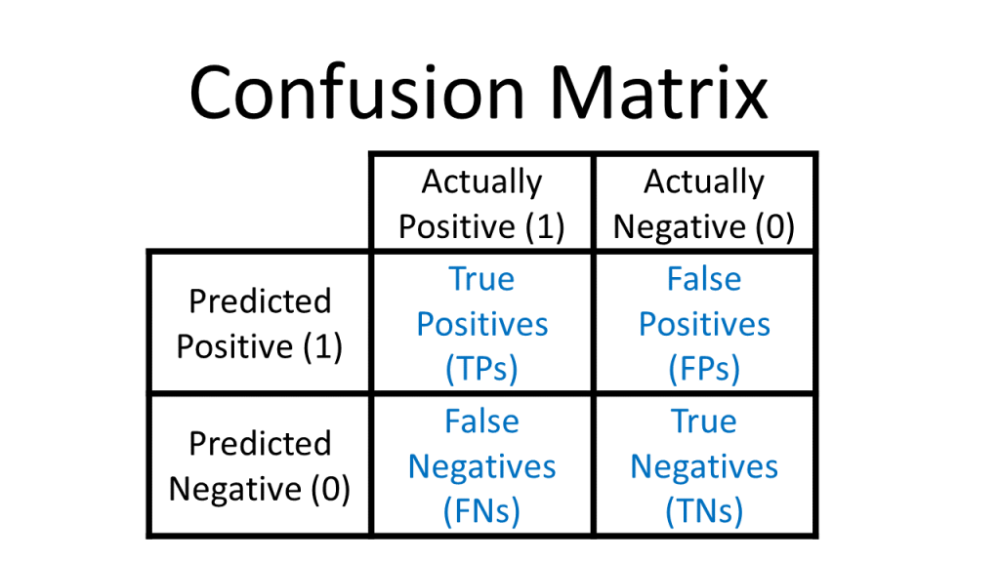

| Patient.number | Cholesterol | Glucose | HDL.Chol | Chol.HDL.ratio | Age | Gender | Height | Weight | BMI | Systolic.BP | Diastolic.BP | waist | hip | Waist.hip.ratio | Diabetes | …17 | …18 |
|---|---|---|---|---|---|---|---|---|---|---|---|---|---|---|---|---|---|
| 1 | 193 | 77 | 49 | 3.9 | 19 | female | 61 | 119 | 22.5 | 118 | 70 | 32 | 38 | 0.84 | No diabetes | 6 | 6 |
| 2 | 146 | 79 | 41 | 3.6 | 19 | female | 60 | 135 | 26.4 | 108 | 58 | 33 | 40 | 0.83 | No diabetes | NA | NA |
| 3 | 217 | 75 | 54 | 4.0 | 20 | female | 67 | 187 | 29.3 | 110 | 72 | 40 | 45 | 0.89 | No diabetes | NA | NA |
| 4 | 226 | 97 | 70 | 3.2 | 20 | female | 64 | 114 | 19.6 | 122 | 64 | 31 | 39 | 0.79 | No diabetes | NA | NA |
| 5 | 164 | 91 | 67 | 2.4 | 20 | female | 70 | 141 | 20.2 | 122 | 86 | 32 | 39 | 0.82 | No diabetes | NA | NA |
| 6 | 170 | 69 | 64 | 2.7 | 20 | female | 64 | 161 | 27.6 | 108 | 70 | 37 | 40 | 0.93 | No diabetes | NA | NA |
Using the Machine Learning Algorithm K-Nearest Neighbors to Detect Patients with Diabetes
Gloria Lowery
2026-04-13
1 Introduction
When give data we typically want to make sense of what the data is telling us. Machine learning algorithms enable us to do just that. They are mathematical and statistical instructions that computers learn to make sense of a raw dataset.
One such learning algorithm that we will look at is K-Nearest Neighbor. It is considered a “non-parametric supervised learning algorithm.” Non-parametric meaning it makes few or no assumptions about the underlying shape or distribution of data. Supervised, as in, it learns from labeled data (input that has a corresponding output) with a goal to predict outcomes for new, unseen data.
The main goal of the K-Nearest Neighbors(KNN) algorithm is to predict the classification or numerical value of a new data point based on how similar it is to its closest neighbors. In this paper we will discuss the concept and underlying methodology of KNN, it’s strengths and limitations, as well as its real-world applications such as in business and medicine. Specifically, applying the KNN algorithm to identify diabetes within a group of subjects who were studied in order to understand the prevalence of obesity, diabetes, and other cardiovascular risk factors.
You can think of KNN as “birds of a feather flock together.”
2 Method
The K-Nearest Neighbors (KNN) algorithm is one of the simplest and most intuitive supervised machine learning methods used for both classification (assigning a category) and regression (predicting a value). It is a non-parametric, supervised machine learning method used for both classification and regression. It requires two instances for it to achieve its goal 1) a distance metric and 2) defining K(“What Is the k-Nearest Neighbor (KNN) Algorithm?” 2024). Its methodology relies on the proximity principle, assuming that similar data points exist in close proximity within a feature space.
Take a look at the following photo.

When determining how to classify the green dot as either a blue square or red triangle, we will look at its neighbors - specifically the ones closest to it. Here, if we chose to look at three of its closest neighbors (k=3) we are looking at the area within the inner solid circle. We see that the majority of its neighbors are red triangles so we would classify the green dot as a red triangle. However, if we’re looking within the area of dashed circle, we see three blue squares vs two red triangles so the green dot would then be classified as a blue square.
But KNN is a bit more complex than this.
2.1 Core Steps of the KNN Methodology
Defining the Parameter ‘K’: Like mentioned, when defining or selecting k, we are selecting the number of nearest neighbors to consider to determine the classification of a query point. For example, K=1, means it will be assigned to the same class as its single nearest neighbor. Choosing K depends on the input data. For example, data with more outliers performs much better with higher k values. We also want to choose an odd number for k to minimize the chances of ties in classification. (S. Zhang and Wang 2018)
Calculating Distance: When a new, unlabeled data point is introduced, the algorithm calculates its distance to every other point in the training dataset. The distance metric measures the distance between the query point(s) and other data points. It can be calculated using a variety of formulas. For example, either Euclidean distance, Manhattan distance, Minkowski, or Hamming distance, and we can visualize this using Voronezh diagrams like above. (“K-Nearest Neighbors (KNN) in 3 Min” 2025)
Euclidean Distance: Most commonly used. Measures the “straight-line” path between points; best for continuous data.
\[ D_{euclidean}(x_1, x_2) = \sqrt{\sum_{i = 1}^{n}{((x_1)_i - (x_2)_i)^2}} \]
Manhattan Distance: Calculates the sum of absolute differences, similar to navigating a grid (taxicab geometry).
\[ D_{manhattan}(x_1, x_2) = \sum_{i = 1}^{n}|((x_1)_i - (x_2)_i)| \] Minkowski Distance: A generalized formula that can represent both Euclidean (p=1) and Manhattan (p=2) distances. \[ D_{Minkowski}(X,Y) = \sum_{i = 1}^{n}|x_i - y_i|^p \] Hamming Distance: Used for categorical or string variables to identify where vectors do not match.

Identify Neighbors: Combining steps 1 and 2. We defined k, we determined distance based on our metric distance formula. Now we sort and select the points with the smallest distance values to the new query point.
Aggregate results based on the goal.
Classification: The new point is assigned the class that appears most frequently among its k neighbors (majority or plurality voting). Like the example above, we had mostly blue squares within the vicinity to the query point aka the green dot so it is most likely also a blue square.
Regression: The algorithm predicts a continuous value by taking the average (mean) or median of the k neighbors’ target values.
2.2 Key Characteristics of KNN
Lazy Learner: KNN is considered a “lazy learner” because it does not have a distinct training phase. It simply stores the training data and defers all computation until a prediction is requested.
Non-Parametric: It makes no prior assumptions about the underlying distribution of the data, making it flexible for complex datasets.
Sensitivity to Scale: Because it relies on distance, features with larger magnitudes can disproportionately influence results. Therefore, feature scaling (standardization or normalization) is a critical preprocessing step.(“Medical Health Big Data Classification Based on KNN Classification Algorithm” 2020)
Finding the Optimal ‘K’: The value of k is often determined using the Elbow Method or Cross-Validation, where multiple k values are tested to find the one that minimizes the error rate without overfitting or underfitting. Analysts typically choose an odd number for k to prevent ties in classification (like if we had equal red triangles and blue squares what then?). In our example, we will be using cross-validation to determine the value of ‘k’. In cross validation, the dataset is divided by kfolds. Where at each iteration each fold is used once as test data and the remaining fold is used as training data, the process is repeated until all data is evaluated. (“K-Nearest Neighbor with k-Fold Cross Validation and Analytic Hierarchy Process on Data Classification” 2021)
2.3 Strengths of KNN
1.Easy to implement/learn. There are also few hyper parameters - just the distance and k value.
- It’s also adaptable. It adjusts easily to new training data since all training data is stored into memory. But similarly, because of that, it doesn’t scale well. As the data set grows, the algorithm becomes less efficient due to increasing computational complexity, which compromises overall model performance.
2.4 Weaknesses of KNN
As mentioned, it can be considered a “lazy algorithm” meaning it stores all training data and defers the computation to the time of classification, increasing memory usage and leads to slower processing compared to other methods of classifying. In other words, it does not build the model beforehand. It instead stores the data and makes predictions on demand.
KNN also has what’s called the “Curse of Dimensionality.” It does not perform well with high dimensional data inputs. On a 2D xy graph it works fine but if we wanted to classify according to color, size, weight, etc. then the data points become sparse in higher dimensions and the distance between points become too similar for KNN to find meaningful neighbors. This leads to what’s called the “peaking phenomenon.” The peaking phenomenon occurs after reaching the optimal number of features - any more just increases noise and increases classification errors especially when the sample size is small. Feature selection and dimensionality reduction techniques can help minimize “curse of dimensionality” but we need to be careful.
Another weakness is overfitting. Low k values can overfit the data. High values tend to smooth out prediction values since average values over a greater are or neighborhood. (Zhang 2022)
2.5 Uses of the KNN Algorithm
When it comes to uses, we can use the KNN algorithm for simple recommendation systems. Data free processing is most commonly used because it’s helpful for data sets with missing values because it estimates values using process called missing data imputation. KNN is actually most often used in finance like stock market forecasting, currency exchange rate, money laundering analysis. But it is also used in health care. For example, risk of heart attacks and prostate cancer by calculating most likely gene expression. In this paper we will apply the KNN algorithm to a data set of potential diabetic patients.(“Medical Image Prediction for Diagnosis of Breast Cancer Using Machine Learning” 2021)
3 Analysis and Results
3.1 Data Description
These data sets are courtesy of Dr John Schorling, Department of Medicine, University of Virginia School of Medicine.(Schorling JB 1997) The data consist of 19 variables on 403 subjects from 1046 subjects who were interviewed in a study to understand the prevalence of obesity, diabetes, and other cardiovascular risk factors in central Virginia for African Americans. According to Dr John Hong, Diabetes Mellitus Type II (adult onset diabetes) is associated most strongly with obesity. The waist/hip ratio may be a predictor in diabetes and heart disease. DM II is also associated with hypertension - they may both be part of “Syndrome X”. The 403 subjects were the ones who were actually screened for diabetes. Glycosolated hemoglobin > 7.0 is usually taken as a positive diagnosis of diabetes. (Willems JP 1997)
As shown, we have variables we do not need/want including empty columns. We’ll select the non-demographic columns to begin and create a reduced data set. The new table below shows the first 6 rows of our reduced data set.
Code
| Diabetes | Cholesterol | Glucose | BMI | Waist.hip.ratio | HDL.Chol | Chol.HDL.ratio | Systolic.BP | Diastolic.BP | Weight |
|---|---|---|---|---|---|---|---|---|---|
| No diabetes | 193 | 77 | 22.5 | 0.84 | 49 | 3.9 | 118 | 70 | 119 |
| No diabetes | 146 | 79 | 26.4 | 0.83 | 41 | 3.6 | 108 | 58 | 135 |
| No diabetes | 217 | 75 | 29.3 | 0.89 | 54 | 4.0 | 110 | 72 | 187 |
| No diabetes | 226 | 97 | 19.6 | 0.79 | 70 | 3.2 | 122 | 64 | 114 |
| No diabetes | 164 | 91 | 20.2 | 0.82 | 67 | 2.4 | 122 | 86 | 141 |
| No diabetes | 170 | 69 | 27.6 | 0.93 | 64 | 2.7 | 108 | 70 | 161 |
The table below now shows a description of each of our variables to be used.
3.2 Preparing the Data
Like mentioned, kNN is sensitive to scaling (of the variables). So it is helpful to first standardize the variables. We do this using the preProcess function of the caret package:
Now we have scaled and centered values for our data.frame.
Cholesterol Glucose BMI Waist.hip.ratio
Min. :-2.89327 Min. :-1.10298 Min. :-2.0566 Min. :-2.75070
1st Qu.:-0.63204 1st Qu.:-0.48958 1st Qu.:-0.7083 1st Qu.:-0.70186
Median :-0.09472 Median :-0.32229 Median :-0.1478 Median :-0.01891
Mean : 0.00000 Mean : 0.00000 Mean : 0.0000 Mean : 0.00000
3rd Qu.: 0.48738 3rd Qu.: 0.00765 3rd Qu.: 0.5301 3rd Qu.: 0.66403
Max. : 5.27849 Max. : 5.16117 Max. : 4.0940 Max. : 3.53241
HDL.Chol Chol.HDL.ratio Systolic.BP Diastolic.BP
Min. :-2.2146 Min. :-1.7417 Min. :-2.06187 Min. :-2.61441
1st Qu.:-0.7099 1st Qu.:-0.7627 1st Qu.:-0.66201 1st Qu.:-0.61414
Median :-0.2469 Median :-0.1869 Median :-0.04958 Median :-0.09555
Mean : 0.0000 Mean : 0.0000 Mean : 0.00000 Mean : 0.00000
3rd Qu.: 0.5054 3rd Qu.: 0.5041 3rd Qu.: 0.47537 3rd Qu.: 0.49712
Max. : 4.0357 Max. : 8.5081 Max. : 4.93740 Max. : 3.01598
Weight
Min. :-1.9404
1st Qu.:-0.6721
Median :-0.1091
Mean : 0.0000
3rd Qu.: 0.5591
Max. : 3.6526 Apply those scaled and centered values to our data using the bind_cols method from dpylr to normalize all of our data.
Now we have a data set which will work well for KNN!
3.3 Using the KNN Model
First, we create a test/train split so that we can train a KNN model. We will use the createDataPartition from caret to randomly select 80% of the data to use for the training set and 20% of the data to use for the test set. Then, create two different data frames using partition point returned by createDataPartition.
Now we “train” the KNN.
The trainControl method is a helper function for all the nuances of the KNN train method. It allows you to easily set up the KNN training parameters.
method: This is the resampling method used. Using “cv” or cross validation. number: The number of folds because we’re using cv.
Now we will use all our variables to predict Diabetes. Then specify the training data, that we’re training a KNN, and pass the training hyperparameters that we built with trainControl.
Code
k-Nearest Neighbors
312 samples
9 predictor
2 classes: 'Diabetes', 'No diabetes'
No pre-processing
Resampling: Cross-Validated (10 fold)
Summary of sample sizes: 281, 280, 281, 282, 281, 281, ...
Resampling results across tuning parameters:
k Accuracy Kappa
5 0.9166129 0.5860773
7 0.9198387 0.6093237
9 0.9198387 0.6138024
11 0.9132863 0.5589329
13 0.9069355 0.5214249
15 0.9037097 0.4918794
17 0.9037097 0.4918794
19 0.8971505 0.4320133
21 0.8939247 0.4087668
23 0.8971505 0.4320133
Accuracy was used to select the optimal model using the largest value.
The final value used for the model was k = 9.This returns a series of KNN models and their associated metrics and tells us that the optimal number of nearest neighbors to be considered is 11 and the model accuracy for that K is 0.9198387. That’s good but the Kappa score is 0.6138024, which can indicate that our model is not predicting the two classes with an even accuracy. Because our data is imbalanced (which is common in the real-world) one class is much more frequent than the others. Variables (like cholesterol) drown out other (like BMI). In these cases, overall accuracy becomes misleading because a model can be highly accurate simply by predicting the majority class. How Cohen’s kappa value helps is that it adjusts the agreement that could occur simply due to the majority class, providing a more realistic estimate of the model’s performance.(“What Is Cohen’s Kappa? How and When to Use It” 2025)
Remember that most of the records in our data set are not patients with diabetes. Our model might simply guess that no patients have diabetes and achieve fairly high accuracy that way.
3.4 Second KNN Model
We can find that simpler models have better accuracy. To see which variables are having the most impact on our outcome variable, we can use fs.anova to check the analysis of variance for each variable and use that in a second KNN.
Code
[1] "Diabetes" "Glucose" "Chol.HDL.ratio" "Cholesterol"
[5] "Systolic.BP" "Waist.hip.ratio" "Weight" "BMI"
[9] "HDL.Chol" "Diastolic.BP" We can see that “Glucose” is the most important feature in our data set for predicting diabetes.
We can now do two things here to improve our performance. First, we’ll balance our data set so that we have equal numbers of records with and without diabetes:
Second, we’ll use just the Glucose readings to calculate the distance to our ‘neighbors’ in KNN:
Code
k-Nearest Neighbors
96 samples
1 predictor
2 classes: 'Diabetes', 'No diabetes'
No pre-processing
Resampling: Cross-Validated (10 fold)
Summary of sample sizes: 87, 86, 86, 86, 88, 86, ...
Resampling results across tuning parameters:
k Accuracy Kappa
5 0.8477778 0.6960976
7 0.8266667 0.6551916
9 0.8177778 0.6360976
11 0.8677778 0.7360976
13 0.8577778 0.7160976
15 0.8677778 0.7360976
17 0.8277778 0.6560976
19 0.8455556 0.6921429
21 0.8355556 0.6721429
23 0.8455556 0.6921429
Accuracy was used to select the optimal model using the largest value.
The final value used for the model was k = 15.The simpler model seems to have better performance. With a K value of 15, we see an accuracy of 0.93 and a Kappa of 0.86. Both of these scores are higher than we had seen with the larger model and the Kappa of 0.86 indicates that we are predicting both classes better although still not perfectly.
3.5 Evaluating both KNN Models
Since we held out a testing set of 20% of our training data, we have an easy way to evaluate both of our models. We will pass the model to predict and check the results against the actual test labels. Use a confusion matrix to assess how well our model predicts the test data. To recap, a confusion matrix looks like this:

3.5.1 Unbalanced Model Analysis and Results
Code
Confusion Matrix and Statistics
Reference
Prediction Diabetes No diabetes
Diabetes 3 0
No diabetes 9 66
Accuracy : 0.8846
95% CI : (0.7922, 0.9459)
No Information Rate : 0.8462
P-Value [Acc > NIR] : 0.220527
Kappa : 0.3607
Mcnemar's Test P-Value : 0.007661
Sensitivity : 0.25000
Specificity : 1.00000
Pos Pred Value : 1.00000
Neg Pred Value : 0.88000
Prevalence : 0.15385
Detection Rate : 0.03846
Detection Prevalence : 0.03846
Balanced Accuracy : 0.62500
'Positive' Class : Diabetes
Our confusion matrix shows 3 true positives, 66 true negatives, 9 false negatives, and 0 false positives.
Sensitivity (0.25000): The model correctly identifies only 25% of the actual positive cases (high false-negative rate). It only caught 3 out of 12 people who have diabetes and missed 75% of the sick patients. Specificity (1.00000): The model correctly identifies 100% of the negative cases, meaning there are no false positives. Positive Predictive Value (1.00000): When the model predicts a positive case, it is 100% correct. Negative Predictive Value (0.88000): When the model predicts a negative case, it is correct 88% of the time. Balanced Accuracy (0.62500): The average of sensitivity and specificity, reflecting a mediocre overall performance skewed by the low sensitivity, detailed in. Prevalence (0.15385): The actual positive cases represent about 15.4% of the total dataset.
At first glance, having a 88.46% accuracy looks great! If you guessed “no diabetes” for each patient, you’d be right 84.62% of the time because the dataset is unbalanced. Our p value is 0.22 which is greater than 0.05, which means our model isn’t statistically better than just guessing “no diabetes” for everyone.Our kappa of 0.36 which isn’t great. It means most of the accuracy is coming from the lopsided nature of the data rather than the model’s predictive power.
In summary, our unbalanced model (first model) does a good job of identifying patients without diabetes but a poor job of identifying patients with diabetes. The model only accurately identifies 25% of the records labeled ‘Diabetes’ so it’s missing the vast majority of actual diabetes cases.
Now we will look at the confusion matrix for our balanced model (second model).
3.5.2 Balanced Model Analysis and Results
Code
Confusion Matrix and Statistics
Reference
Prediction Diabetes No diabetes
Diabetes 10 10
No diabetes 2 56
Accuracy : 0.8462
95% CI : (0.7467, 0.9179)
No Information Rate : 0.8462
P-Value [Acc > NIR] : 0.57623
Kappa : 0.5357
Mcnemar's Test P-Value : 0.04331
Sensitivity : 0.8333
Specificity : 0.8485
Pos Pred Value : 0.5000
Neg Pred Value : 0.9655
Prevalence : 0.1538
Detection Rate : 0.1282
Detection Prevalence : 0.2564
Balanced Accuracy : 0.8409
'Positive' Class : Diabetes
Our confusion matrix shows 10 true positives, 56 true negatives, 2 false negatives, and 10 false positives.
Sensitivity (83.3%): Out of 12 people who actually have diabetes, the model caught 10 of them. It only missed 2. Specificity (84.8%): Out of 66 healthy people, the model correctly identified 56 as healthy. Pos Pred Value: Is 50% — when the model says “Diabetes,” it’s a coin flip whether the person actually has it. Balanced Accuracy (84.1%): Since it’s high, it shows the model is actually learning to tell the difference between the two classes. Negative Predictive Value (96.5%): This is excellent for a medical screen. If the model tells a patient they don’t have diabetes, it is almost certainly correct. Kappa (0.5357): This is much better. It proves the model is doing much better than just randomly guessing based on the majority group.
As we can see, our overall accuracy rate has fallen slightly, but our ability to predict the diabetes label is much much better.This model correctly predicts 10 of the 12 true ‘diabetes’ records. Simple guessing would have missed all 12 sick people, the model found 10 of them. On the negative side though, the model mis-classifies 9 of the 66 ‘no diabetes’ records as ‘diabetes’. This is a downside of training our KNN on a balanced data set: when we introduce new data points from our test set, our model is a little too over-eager to label them ‘diabetes’ when they aren’t.
4 Conclusion
KNN is a powerful tool to predict the classification or numerical value of new data. It’s simple, intuitive, and easy to learn which makes it easy to implement. In our example, we applied the KNN algorithm to a set of patients to determine who has Diabetes and fine-tuned hyperparameters to improve performance. We also learned how you can prepare data for use with KNN by scaling and centering a data set and the different techniques you can use to tune the algorithms.
An, J. 2021. “Diagram Illustrating Hamming Distance Between Binary Representations of Integers] [Digital Image].”
“K-Nearest Neighbor with k-Fold Cross Validation and Analytic Hierarchy Process on Data Classification.” 2021. International Journal of Advances in Data and Information Systems 2 (1): 1–8.
“K-Nearest Neighbors (KNN) in 3 Min.” 2025.
“Medical Health Big Data Classification Based on KNN Classification Algorithm.” 2020. IEEE Access 8: 28808–19.
“Medical Image Prediction for Diagnosis of Breast Cancer Using Machine Learning.” 2021. AIP Conference Preceedings 2853 (1).
S. Zhang, M. Zong, X. Li, and R. Wang. 2018. “Efficient kNN Classification with Different Numbers of Nearest Neighbors.” IEEE Transactions on Neural Networks and Learning Systems 29 (5): 1774–85.
Schorling JB, Siegel M, Roach J. 1997. “A Trial of Church-Based Smoking Cessation Interventions for Rural African Americans.” Preventive Medicine 26: 92–101.
“What Is Cohen’s Kappa? How and When to Use It.” 2025.
“What Is the k-Nearest Neighbor (KNN) Algorithm?” 2024.
Willems JP, DE Hunt, Saunders JT. 1997. “Prevalence of Coronary Heart Disease Risk Factors Among Rural Blacks: A Community-Based Study.” Southern Medical Journal 90: 814–20.
Zhang, S. 2022. “Challenges in KNN Classification.” IEEE Transactions on Knowledge and Data Engineering 34 (10): 4663–75.